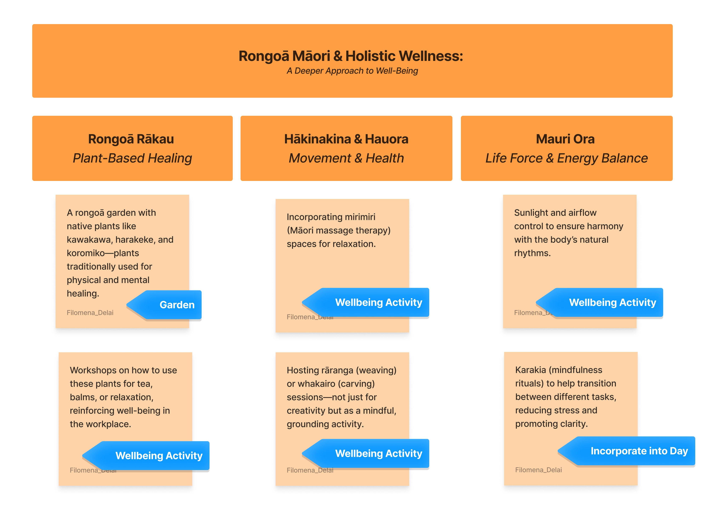
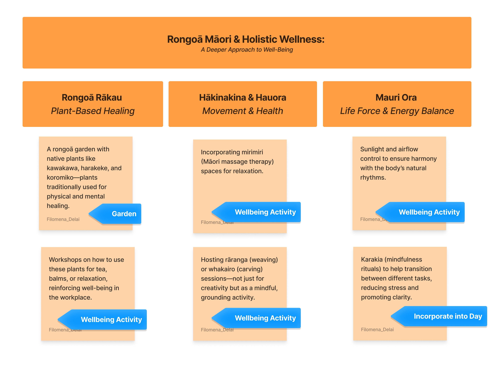
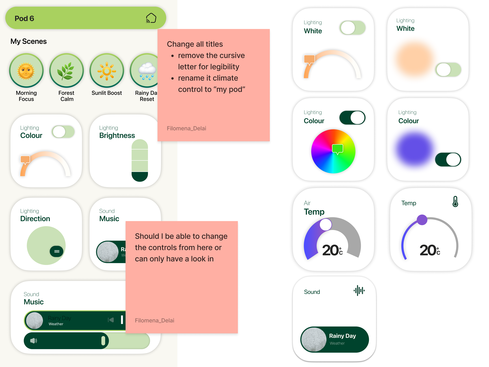
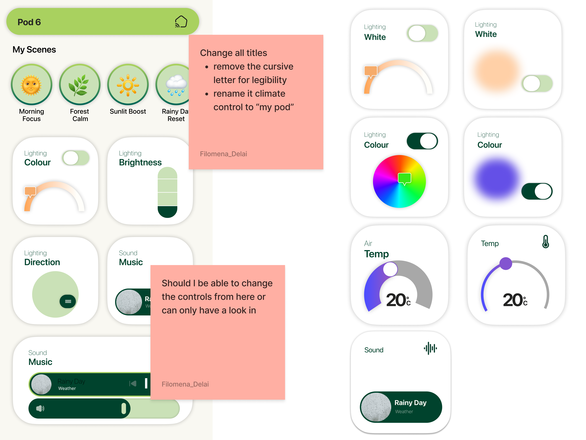

The Living Room:
A 'Futuristic Co-Working Space' Concept
Reimagining the modern office to enhance well-being for corporate workers.

Team leader
Research & analysis
Interviews & surveys
Wireframing & prototyping
Figma
Adobe Illustrator
8 weeks
Mar-Apr 2025
Page Hodge | Graphic
Yunho Ha | Motion
Matt Brown | Graphic


In Aotearoa, 1 in 3 urban professionals face high work-related stress. We know nature helps, even 10 minutes outside can boost mood and productivity.
But for city workers, real access to green space is limited. Most wellness efforts feel passive or surface-level.
How might we design a workspace where nature is actively built into the workday; not just as a backdrop, but as a tool for focus, wellbeing, and connection?
 

 
